← Le Japon au quotidien (anglais)
UNE PETITE HISTOIRE À EMPORTER
Une boisson pour la route.
À la gare, au konbini ou au distributeur, une étiquette inconnue peut ouvrir une petite découverte. Des noms et des saveurs à connaître, en train, en promenade ou pendant une pause.
Plutôt une bière ? Comparez les canettes et leurs saveurs, puis retrouvez leurs brasseries près des voies.
Les photos d’octobre 2026 aident à reconnaître les étiquettes. Emballages et stocks varient ; consultez les fabricants pour les produits actuels.

01 / お茶 / THÉ
Tout commence par les feuilles.
Vert, grillé, floral ou terreux : le thé a plusieurs visages. Repérez d’abord le type, puis la marque.
Thé vert
Ryokucha. Frais et végétal, légèrement amer. Un compagnon courant du bento ou de l’onigiri.
Thé torréfié
Hōjicha. La torréfaction apporte un parfum grillé. Sa couleur ambrée n’en fait pas un thé noir.
Thé au riz grillé
Genmaicha. Le riz grillé apporte une autre note au thé vert.
Au-delà du thé vert
- 烏龍茶 · Oolong
- Thé partiellement oxydé, souvent rond ou grillé.
- ジャスミン茶 · Jasmin
- Thé parfumé aux fleurs de jasmin, pour une note florale.
- ルイボス · Rooibos
- Infusion sud-africaine. Vérifiez les ingrédients des mélanges.
- 麦茶 · Thé d’orge
- Mugicha. Orge grillée ; bouteilles et étiquettes juste en dessous.
Quatre noms au rayon thé
Les grands caractères désignent souvent la marque, les petits le type de thé.
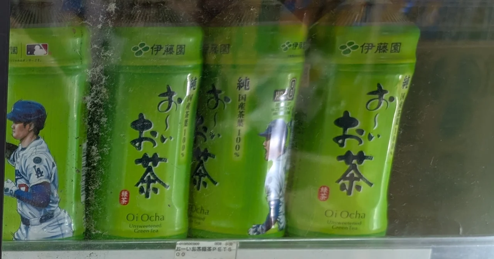
ITO EN · THÉ VERT ET AUTRES THÉS
Oi Ocha
お〜いお茶
Un nom sur une bouteille vert vif à retenir avant d’explorer le rayon. 緑茶 signifie thé vert ; la gamme comprend aussi du thé torréfié et du thé au riz grillé.
- Ryokucha 緑茶 — un thé vert simple.
- Hōjicha ほうじ茶 — un parfum grillé.
- Genmaicha 玄米茶 — du thé au riz grillé.
Les illustrations changent. Repérez aussi お〜いお茶, pas seulement la couleur.
Gamme officielle (japonais) ↗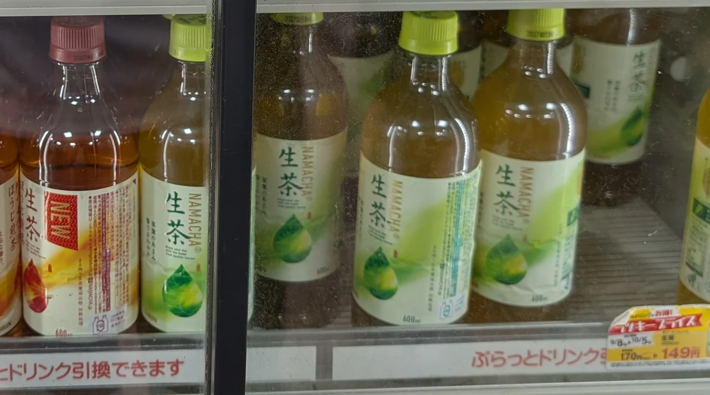
KIRIN · UN NOM, PLUSIEURS THÉS
Namacha
生茶
Les deux grands caractères sont la marque. Ici, l’étiquette orange-rouge indique le thé torréfié, la verte le thé vert.
- Namacha — thé vert avec extrait de feuilles fraîches.
- Hōji Sencha ほうじ煎茶 — la version torréfiée.
Lisez aussi les petits mots : 生茶 figure sur les deux.
Gamme officielle (japonais) ↗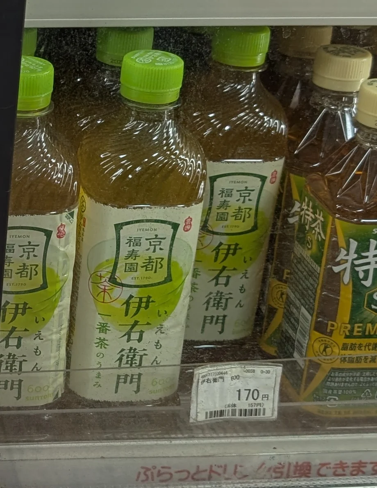
SUNTORY · KYOTO FUKUJUEN
Iyemon
伊右衛門
Un nom à repérer au kiosque. L’étiquette porte 京都福寿園, Kyoto Fukujuen, maison de thé dont le premier propriétaire a donné son nom à la marque.
- Thé vert Iyemon — la version de départ, en photo.
- Hōjicha 焙じ茶 — thé torréfié ; même type que ほうじ茶, malgré l’écriture différente.
- Thé au jasmin ジャスミン茶 — repérez ces mots pour une note florale.
Plusieurs gammes existent, dont Tokucha. Lisez le nom complet ; le choix varie selon le magasin.
Gamme officielle (japonais) ↗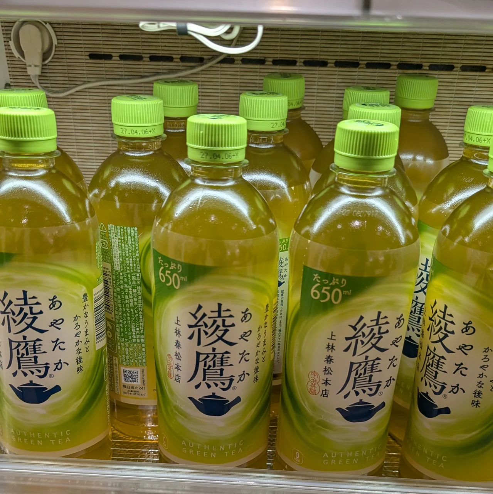
COCA-COLA JAPAN · THÉ VERT
Ayataka
綾鷹
Autre nom japonais à reconnaître, développé avec Kanbayashi Shunshō Honten de Kyoto pour retrouver le thé infusé dans un kyūsu, une théière japonaise.
À repérer : les deux caractères 綾鷹 et la petite théière. La gamme comprend aussi du thé torréfié ; lisez au-delà de la marque.
Gamme officielle (japonais) ↗麦茶 / THÉ D’ORGE
Un arrêt pour le thé d’orge.
Brun, grillé et rafraîchissant, le mugicha est fait d’orge, sans les feuilles du thé vert ou torréfié. Ces deux exemples sont sans sucre ajouté ni caféine, pour le bento ou un long trajet. Repérez 麦茶 ou むぎ茶.
02 / コーヒー / CAFÉ
Une petite canette, beaucoup à lire.
Du café noir au café au lait sucré, trois informations aident à choisir un café prêt à boire.
Avec ou sans lait ?
ブラック · Noir
Black signifie sans lait. Pour le sucre aussi, cherchez 無糖.
カフェオレ / ラテ
Café au lait et latte indiquent du lait.
Quel degré de sucre ?
無糖 · Mutō
Mention sans sucre ou non sucré.
微糖 · Bitō
Moins de sucre, pas zéro ; des édulcorants peuvent être utilisés.
Quelle catégorie ?
コーヒー / コーヒー飲料
Café / boisson au café.
Ces catégories dépendent de la teneur en café, pas du sucre ni de la qualité. Certaines boissons au lait relèvent d’une catégorie laitière.
Guide des étiquettes : Black (japonais) ↗, Mentions du sucre (japonais) ↗, Catégories de café (japonais) ↗
Trois familles de cafés
Lisez le nom de la boisson, pas seulement le logo.
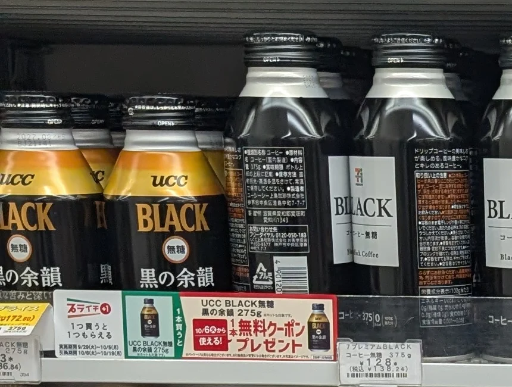
UCC · DEUX DÉPARTS TRÈS DIFFÉRENTS
UCC
ユーシーシー
UCC illustre la diversité : café au lait sucré et café noir non sucré peuvent partager un fabricant.
- BLACK sans sucre ブラック無糖 — sans sucre ni lait. À gauche : UCC BLACK 無糖 黒の余韻.
- Café au lait ミルクコーヒー — sucré et lacté, dans la canette à rayures brunes.
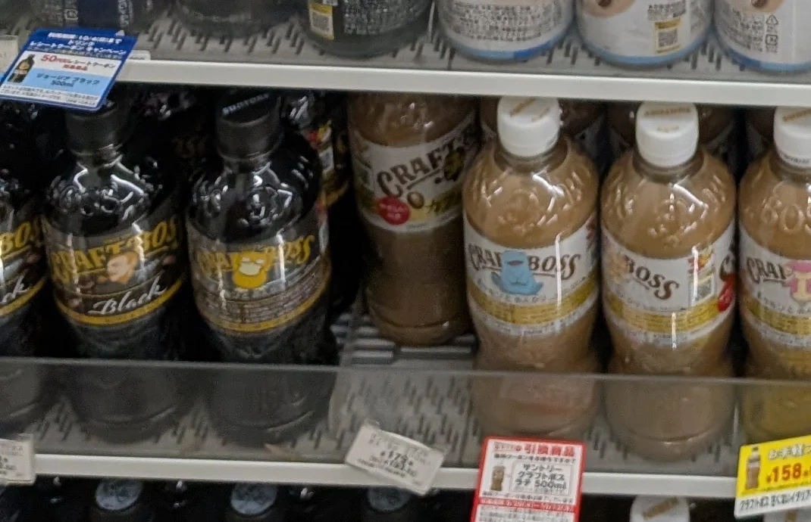
SUNTORY · PLUS D’UN BOSS
BOSS
ボス
Le visage à la pipe désigne une grande famille, pas un goût unique. Ici, CRAFT BOSS réunit cafés noirs et lactés.
- Noir sans sucre 無糖ブラック — sans sucre ni lait.
- Zeitaku Bitō 贅沢微糖 — au lait, moins sucré mais toujours sucré.
- Café au lait カフェオレ — sucré et lacté.
- CRAFT BOSS — grandes bouteilles refermables. Lisez le nom : la gamme dépasse le café.
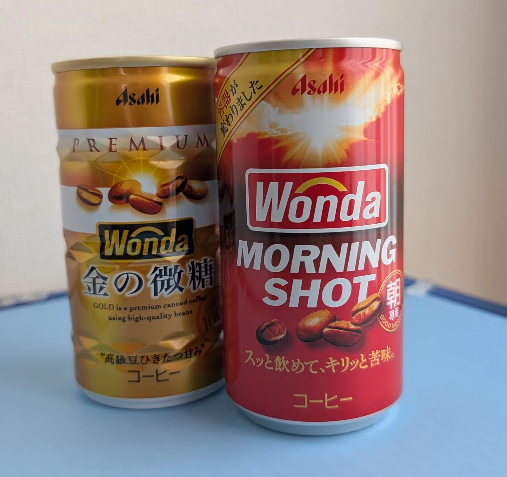
ASAHI · DEUX CANETTES À COMPARER
WONDA
ワンダ
Le nom japonais se prononce « Wanda » ; les canettes portent WONDA. La dorée à gauche et la rouge à droite sont deux cafés au lait différents.
- Kin no Bitō 金の微糖 — dorée : lait et sucre réduit, pas sans sucre.
- Morning Shot モーニングショット — rouge : café au lait sucré, présenté pour le matin.
- Noir — autre option de la gamme. Pour une version non sucrée, cherchez 無糖 sur l’étiquette.
03 / 清涼飲料水 / AUTRES BOISSONS
Du familier et de l’inédit.
Au-delà des colas mondiaux : boisson sportive bleue, classique lacté, eau de montagne et bulles.

OTSUKA · BOISSON SPORTIVE
Pocari Sweat
ポカリスエット
Boisson électrolytique douce et légèrement acidulée. Son étiquette bleue et blanche se retrouve aussi sur un bâtiment près du Shinkansen.
À repérer : les grandes lettres blanches POCARI SWEAT.
Voir l’usine de Fukuroi ↓Gamme officielle (japonais) ↗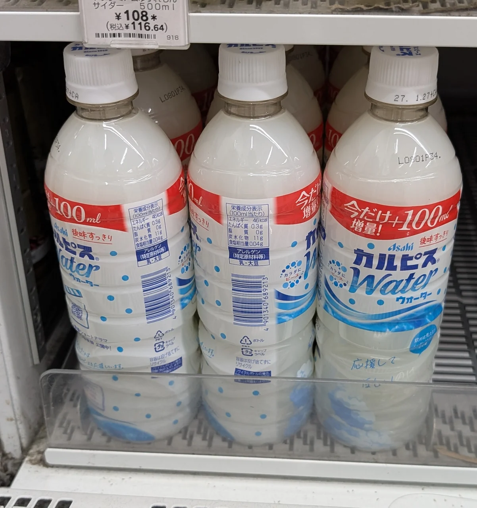
ASAHI · DOUX ET ACIDULÉ
Calpis Water
カルピスウォーター
Boisson lactée en apparence, douce et acidulée, à base de lait fermenté. « Water » signifie ici prête à boire, pas eau nature.
Water ou Soda ? Calpis Water est sans bulles ; カルピスソーダ ajoute des bulles. Contient du lait.
Gamme officielle (japonais) ↗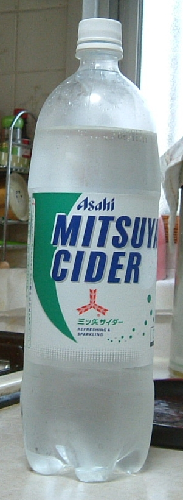
ASAHI · UN SODA JAPONAIS CLASSIQUE
Mitsuya Cider
三ツ矢サイダー
Ici, « cider » désigne un soda sucré sans alcool. Le classique transparent ouvre sur les parfums de fruits changeants de la marque.
À repérer : 三ツ矢, « trois flèches ». L’original est un soda, pas un cidre alcoolisé.
Gamme officielle (japonais) ↗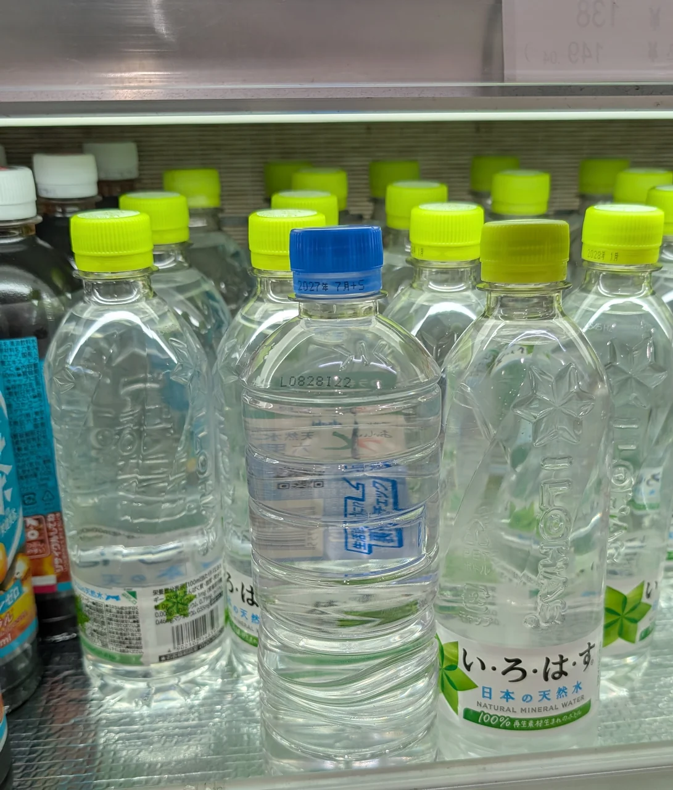
EAU NATURE · LISEZ LE NOM COMPLET
Eau naturelle
天然水 · い・ろ・は・す
Pour de l’eau nature, cherchez 天然水 — tennensui, eau naturelle. Le moulin vert désigne I LOHAS, marque japonaise d’eau minérale naturelle.
Nature ou aromatisée ? I LOHAS propose aussi des boissons à la poire ou à la pêche. La marque seule ne garantit pas de l’eau nature non sucrée.
Suntory Tennensui est un autre nom à connaître. Ses quatre sources sont Minami Alps, Kita Alps, Oku-Daisen et Aso : un petit cours de géographie sur la bouteille.
I LOHAS (japonais) ↗ Les quatre sources Suntory (japonais) ↗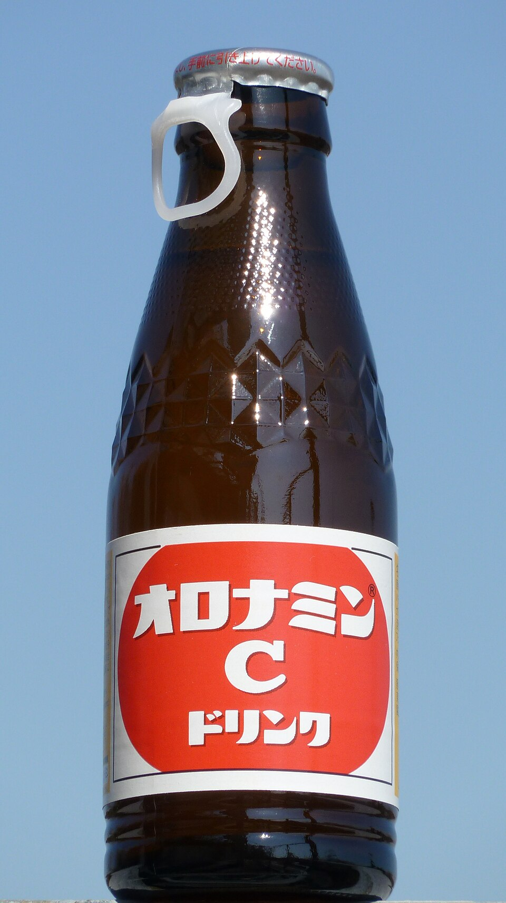
OTSUKA · PETITE BOUTEILLE, GRAND PÉTILLANT
Oronamin C
オロナミンC
Petite bouteille brune à étiquette rouge, goût sucré d’agrumes et bulles. Une boisson vitaminée japonaise ancienne, distincte des grandes canettes énergisantes.
Dans le même rayon : les boissons énergisantes comme ZONe forment une autre catégorie. Vérifiez caféine et portion.
Oronamin C (japonais) ↗ ZONe (japonais) ↗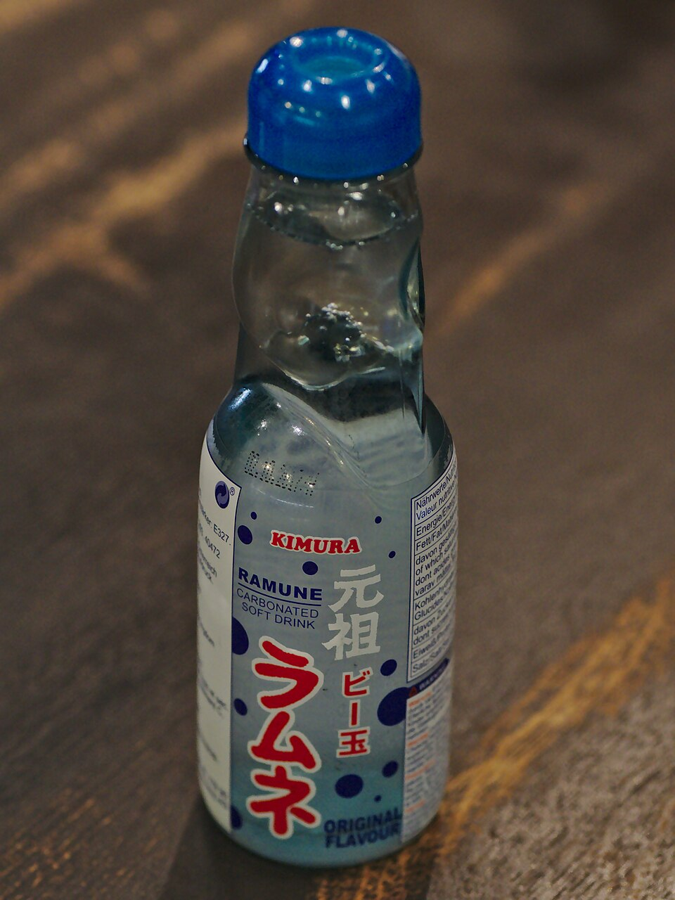
FABRICANTS LOCAUX · BOUTEILLE À BILLE
Ramune
ラムネ
La bille du goulot fait partie du plaisir. Ce soda se rencontre souvent aux fêtes, dans les rues touristiques et les boutiques de souvenirs.
Un petit rituel : suivez les instructions pour enfoncer la bille. À ouvrir quand on peut s’arrêter un instant.
Un fabricant japonais de ramune ↗Crédits photo et notes
Guide éditorial indépendant, sans approbation des fabricants. Les marques identifient les boissons. Les photos d’octobre 2026 montrent les produits de cette visite ; les autres sont datées. Les liens officiels présentent les gammes actuelles ; stocks variables selon magasin et saison.
Chaque photo Commons est créditée ci-dessous. Sa licence s’applique à l’image, pas à la page entière. Les marques restent à leurs propriétaires.
- Mitsuya Cider Bottle.jpg — RadioActive~commonswiki (attribution Commons). CC BY-SA 3.0. Affichée sans recadrage.
- Otsuka - Oronamin C Drink.jpg — Quercus acuta. CC0. Affichée sans recadrage.
- Ramune by Kimura Drink Co Ltd.jpg — Alexande rKlink. CC BY 4.0. Affichée sans recadrage.
Références produits et étiquettes vérifiées le 3 octobre 2026 ; ajouts thé, orge et eau le 5 octobre. Consultez les fabricants pour ingrédients, allergènes et emballages actuels.